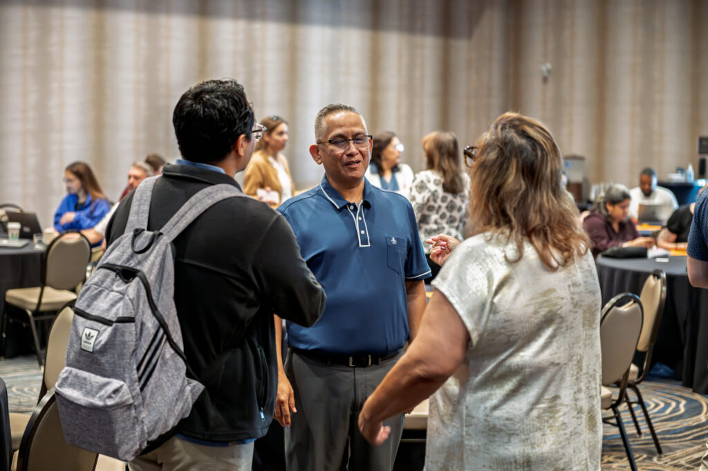

Employer guide to adult education partnerships
What programs offer, how to advise on training, and how hiring pipelines form.
Download PDF
Home › Employer Connect Hub
For Texas Employers
Curated information, a wider network and a stronger talent pipeline for Texas employers who recruit, develop and retain skilled talent through adult education partnerships.
Curated information
Guides, recordings and reports selected for employers. New items are added after every session and summit. Curated list from CPPDC
What programs offer, how to advise on training, and how hiring pipelines form.
Download PDFEmployers from three Texas industries on what they need from adult education partners.
Watch the recordingDecks from the employer sessions at the 2026 Career Pathways Symposium.
Download slidesBroader networks
Employer session with the adult education programs preparing your next hires.
The employer sessions at the statewide Career Pathways Symposium, with 200+ providers, boards and partners in the room.
Regional work groups
One-day summits across Texas regions each include an employer work group, where local employers shape what providers teach next.
Who is already here
The employers, workforce boards, colleges and agencies already at the table, with a short profile of each.
A stronger talent pipeline
Join the Hub
Sign up and CPPDC sends the session invitations, the employer resources as they are added, and an introduction to the providers in your region.